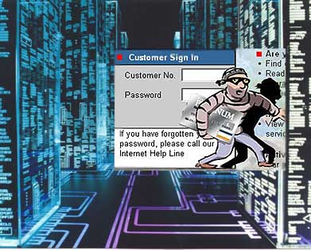

LECTURAS COMPLEMENTARIAS SEGURIDAD INFORMÁTICA
Definición seguridad Informática
Amenazas
Técnicas para Asegurar el Sistema
Modelos y Estándares de Seguridad
Aspectos Éticos y Legales en la Seguridad Informática
